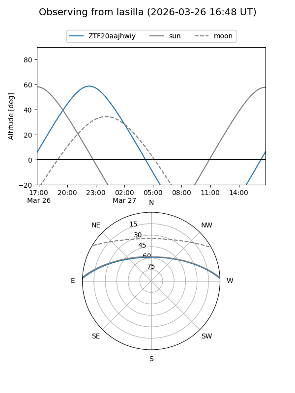
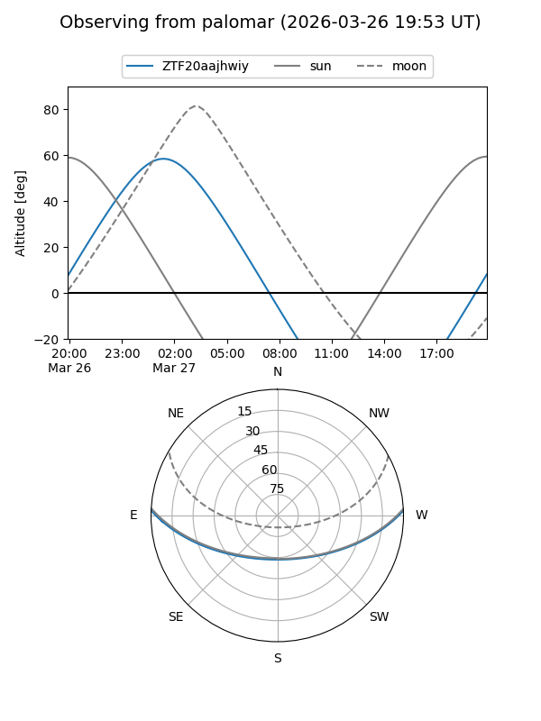

ZTF20aajhwiy
Target ZTF20aajhwiy at 2026-03-27 06:14
Aliases and brokers:
FINK: link
Lasair: link
ALeRCE: link
alt names
ZTF20aajhwiy (ztf,fink_ztf)
Coordinates:
equatorial (ra, dec) = 87.7869,+1.87562
equatorial (HMS+DMS) = 05:51:08.85,+01:52:32.22
galactic (l, b) = (204.2341,-12.49689)
Flags:
Photometry:
last ztfg=17.26
1 ztfg detections
Lightcurve
Visibility


Additional plots